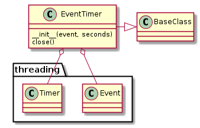

An EventTimer will block if you try to make a new request too soon (too soon being something that needs to be empirically determined by the user). It was originally created to prevent calls to a (slow) AP’s http server from trying GET requests too frequently, as that caused the server to timeout. I think that it will be more useful here as a way to provide even intervals to things that have to make calls at certain times (e.g. code that watches a proc-file).
I’ve confused myself a bit while trying to remember what this does, so I think I’ll elaborate a little more. The EventTimer bundles threading.event and threading.Timer. By itself it will block until the time expires. The wait decorator calls this event before executing the method it decorates. If you want to use them to maintain intervals, then, the wait decorator has to decorate a method that will be called once, then that method should be called repeatedly.
These are from python’s threading module:
Event(*args, **kwargs) |
A factory function that returns a new event. |
Event.set |
|
Event.clear |
|
Event.wait |
|
Timer(*args, **kwargs) |
Factory function to create a Timer object. |

EventTimer |
|
EventTimer.event |
|
EventTimer.timer |
|
EventTimer.set_event |
|
EventTimer.start |
|
EventTimer.clear |
|
EventTimer.wait |
|
EventTimer.close |
The constructor takes two optional parameters.
| Parameter | Description | Default |
|---|---|---|
| seconds | time to block | 0.5 seconds |
| event | threading.event instance | None |
The event should only be set if this EventTimer has to share its event with other objects. Probably some case with threads, or somesuch... that’s not the actual expected use for this.
wait Decorator¶To make using the EventTimer easier, you can use the wait decorator. What it does:
- Call event.wait in case a previous timer is still running
- Clear the event
- Call the decorated method
- Start the timer
Basic Use:
@wait
def do_something(self):
# do something here after the event-timer expires
return
Warning
This is a method decorator – it assumes the object it belongs to has a timer property.
wait |
As a basic example, suppose you want to print ‘Able was I ere I saw Elba’ every second. You could do something like this:
class Napolean(object):
def __init__(self):
self.timer = EventTimer(seconds=1)
@wait
def emit(self):
print 'Able was I ere I saw Elba'
def __call__(self):
while True:
self.emit()
And this would print the palindrome with 1 second pauses in between:
speak = Napolean()
speak()
The previous example does’n actually work as advertised. By default the event won’t block on the first call. This makes sense if you are trying to protect something that can’t becalled too frequently:
.. '
@wait def hit_server(self):
self.server.get()